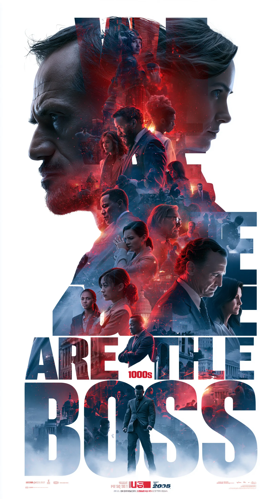

We The People
A shouting, fold-out manifesto on protest and noise. Edition of 150, sold out in a weekend.

A shouting, fold-out manifesto on protest and noise. Edition of 150, sold out in a weekend.
Full sleeve + insert collage for a debut record. Sticker pack went with the first pressing.
Wall-sized paste-ups built from a year of street flyers. Featured in a city-arts roundup.
A poster a night, each one different, all torn from the same screaming alphabet.
Co-made a 5-artist riso anthology, hung it in a basement, threw the launch the same night.
Wearable collage for two indie labels. Patches sold out before the photos went up.
Castellano makes you look twice, then keeps shouting after you've left the room.— City Arts Weekly
If quiet is a brand, I'm the opposite of a brand.— Juno, in her own words
The rare maker whose process — tear, tape, repeat — is the whole point.— Riso Heads zine
White space is a choice and I keep choosing against it. If a corner is empty, paste something on it.
Tear, tape, repeat. The wobble and the shadow are the point — clean is somebody else's job.
I don't soften the work to fit a brand book. If you wanted quiet you'd have called someone else.
It exists on paper first. The internet gets the photo after the ink is dry and the edition's gone.
Self-published riso zines, cover art and paste-up posters for indie labels, venues and anyone tired of quiet.
Built the visual world for a small label — sleeves, inserts, sticker packs and tour merch, all hand-collaged.
Learned the machines two colors at a time. Jammed a lot of paper. Fell hard for misregistration.
Got a record, a show, a brand that needs to get loud? Bring me the project nobody else will touch.
— more is more, always —© 2026 Juno Castellano · Cut & pasted by hand